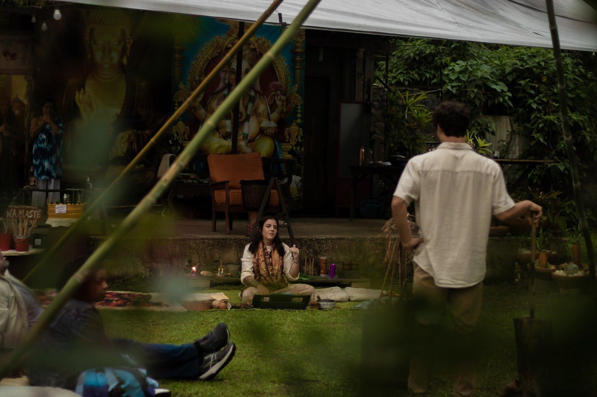
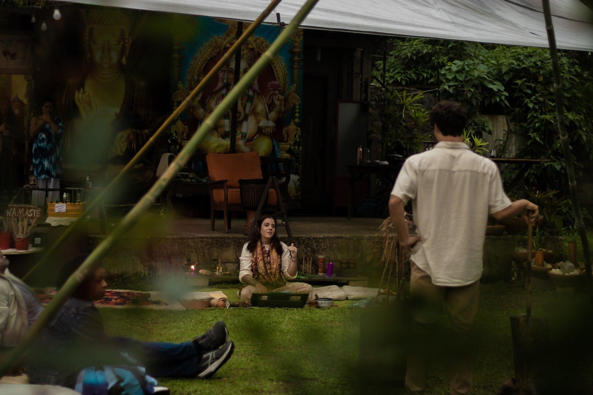
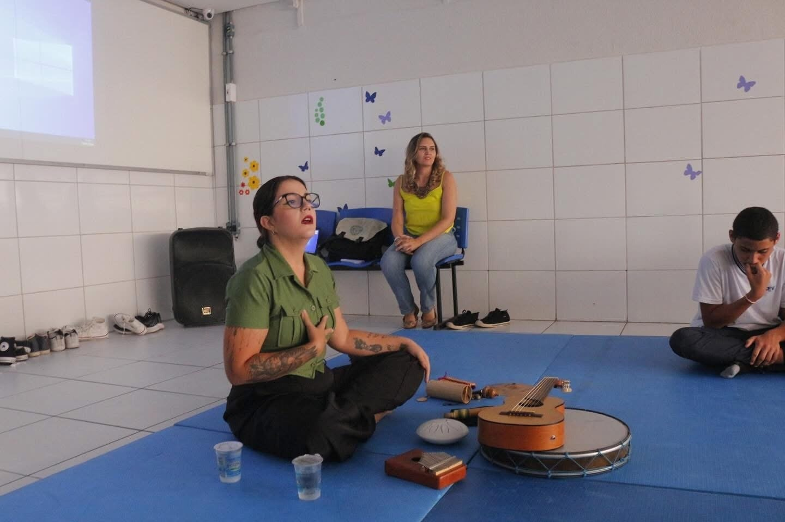
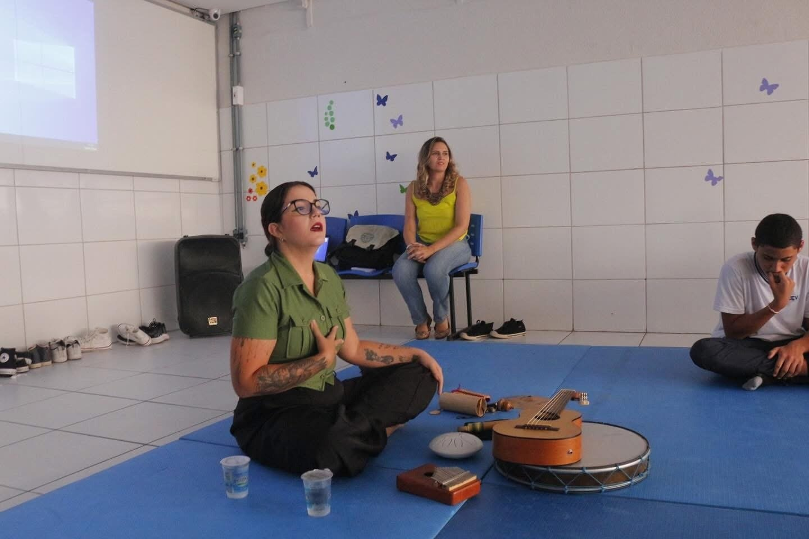

Voo Profundo
O Voo Profundo é uma jornada de autoconhecimento que integra as suas experiências e as suas feridas, em busca de um novo sentido para a vida. É um processo terapêutico guiado pela psicologia junguiana e terapias integrativas, com duração de 3 a 6 meses.
Através de encontros individuais semanais e ferramentas de autoconhecimento, você irá:
- ✨ Desvendar os seus padrões e bloqueios.
- 🌱 Despertar o seu potencial.
- 💖 Conectar-se com a sua essência.
- 🕊️ Viver com mais propósito e leveza.
 

 
